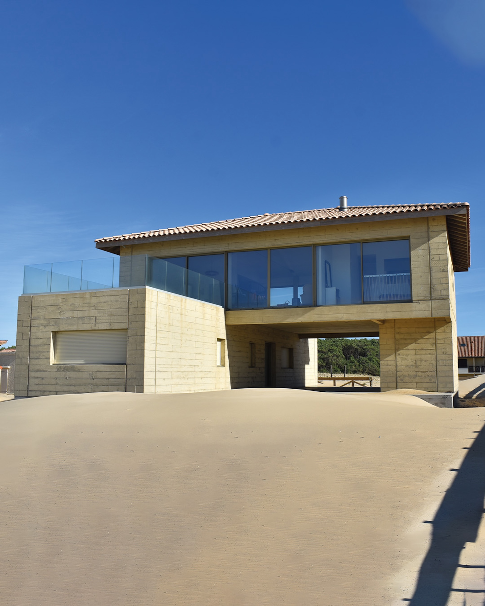
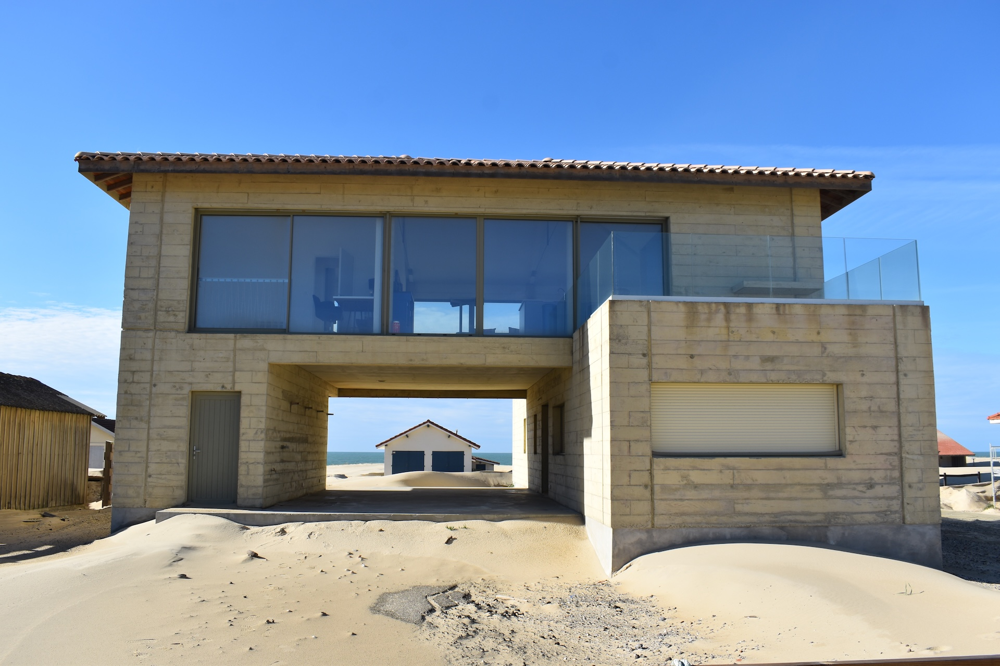
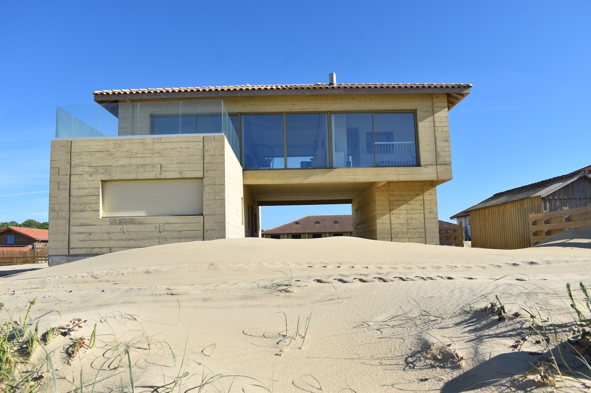
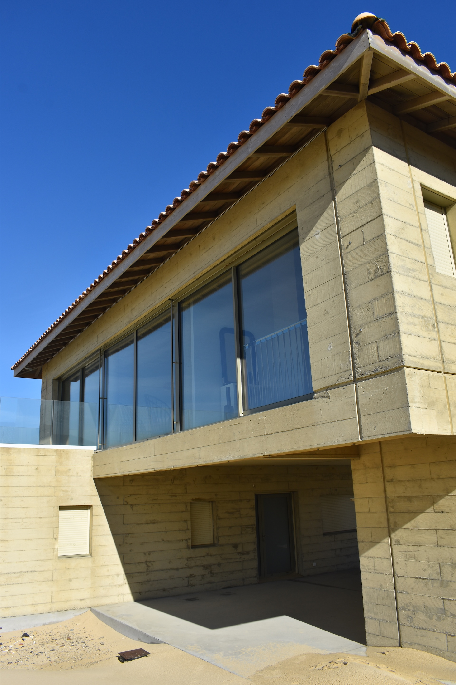
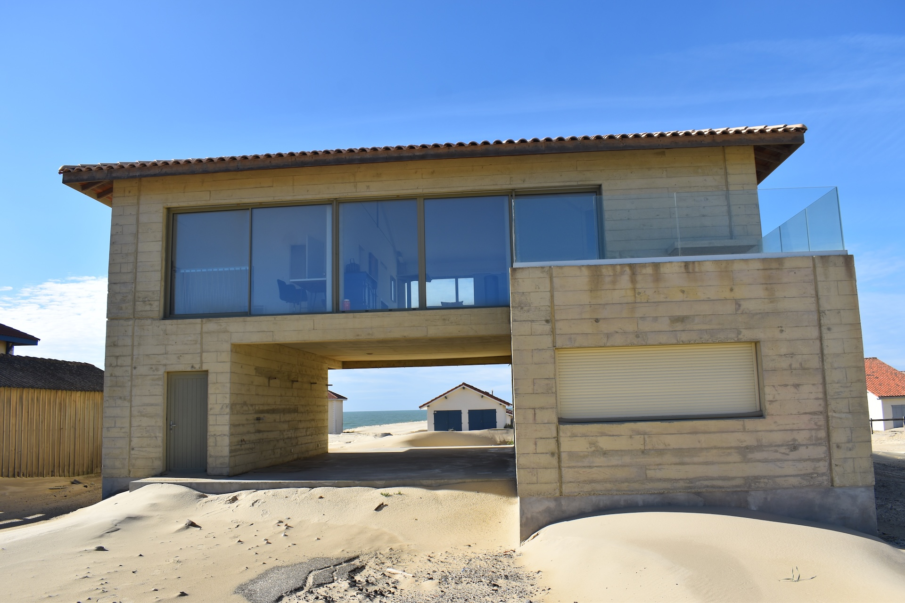
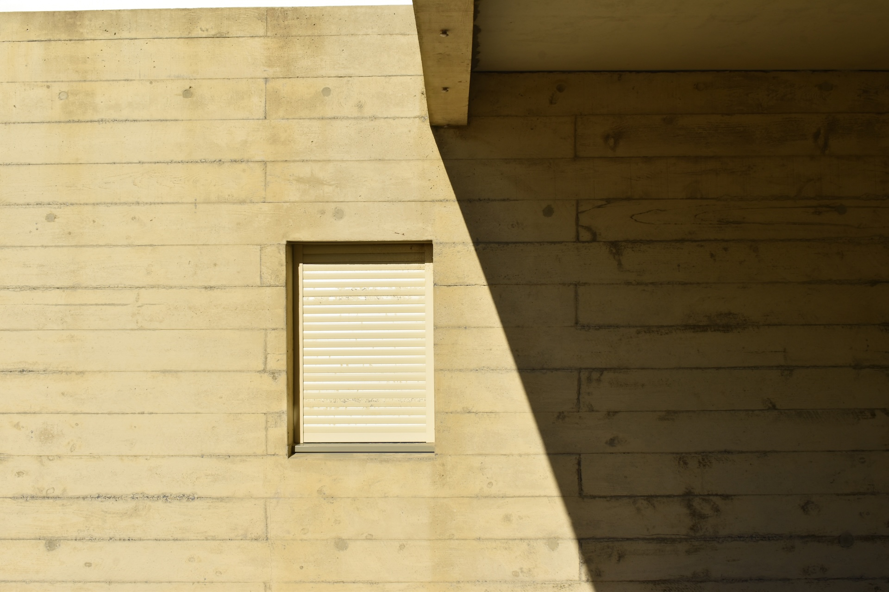
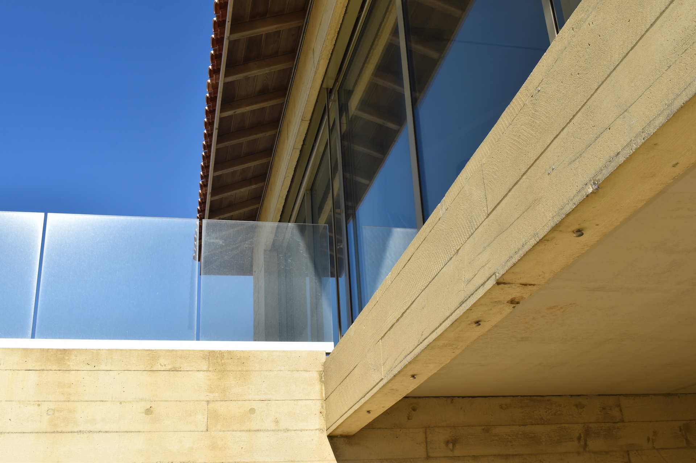
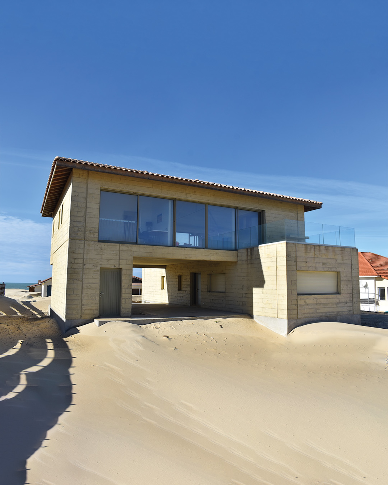
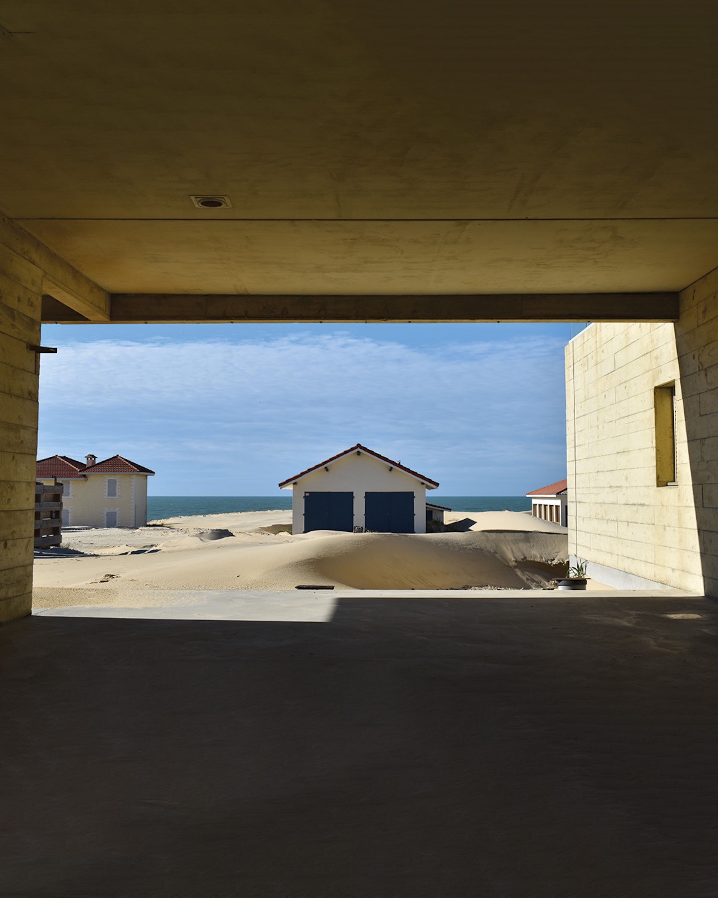
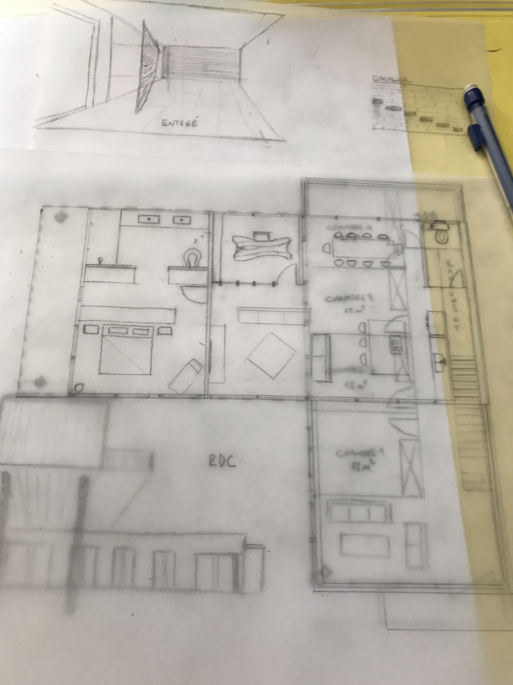

Construction neuve — Landes
Description
Construction d'une maison individuelle à Vieille-Saint-Girons-Plage, en première ligne de dune. Le projet s'inspire de l'architecture brésilienne — deux blocs superposés, le volume inférieur massif et fermé, le volume supérieur ouvert sur l'océan et la forêt par de larges baies vitrées.
Le béton brut de décoffrage teinté sable est le matériau unique de la façade : il évoque le bois des maisons alentour, se fond dans le paysage dunaire, et ne nécessite aucun entretien. La maison évoluera naturellement au rythme de la nature qui l'entoure.
En rez-de-chaussée, les ouvertures sont réduites pour se prémunir du sable. À l'étage, suite parentale, pièce de vie et cuisine s'ouvrent pleinement sur la vue. MOE complète de l'esquisse à la livraison.








